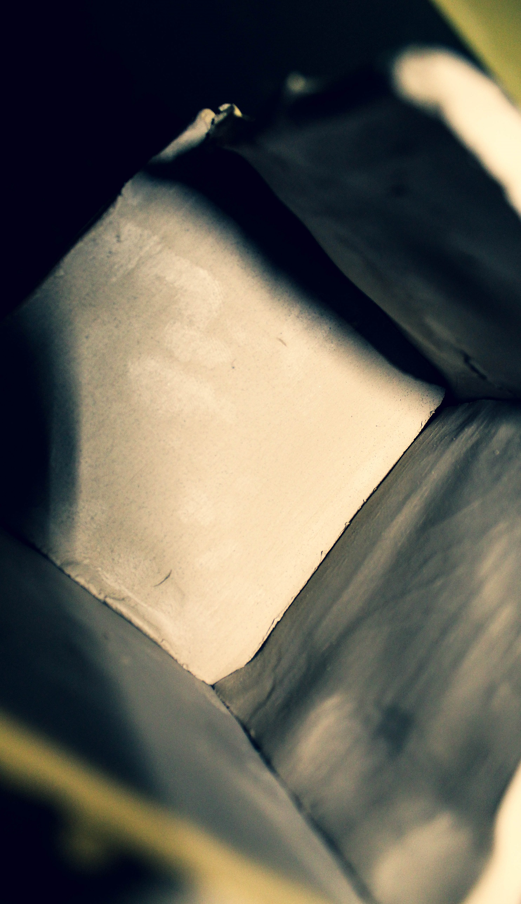
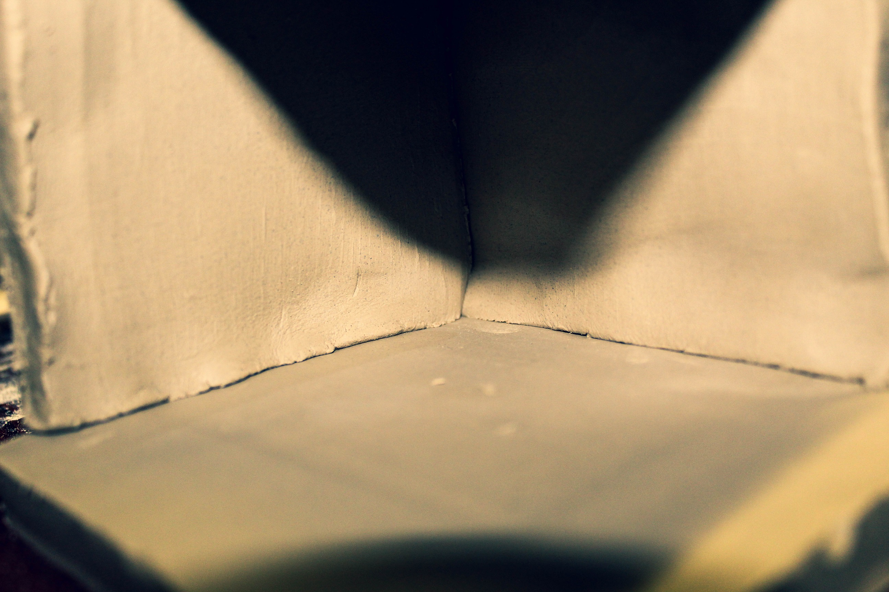
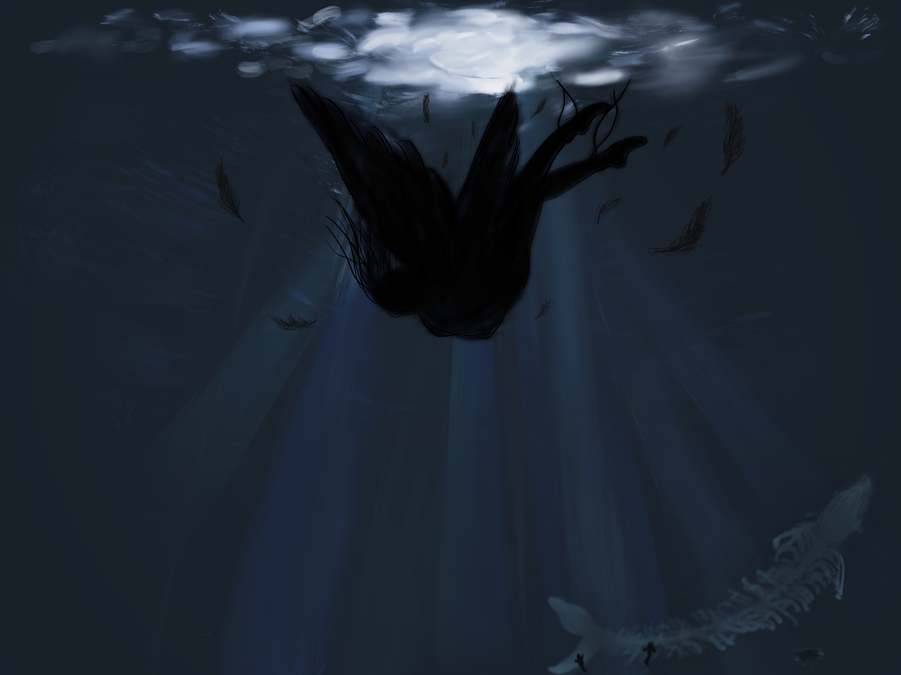

Art 103 - Art as System
| Homepage |
-
| Oblique Strategies - Group works |
-
| Oblique Strategies - Personal Works |
| Reading #1 - Part 1 |
-
| Reading #1 - Part 2 |
| Mod and Tessle - Phase 1 |
-
| Mod and Tessle - Phase 2 |
-
| Mod and Tessle - Phase 3 |
| Fusion Exercise - Phase 1 |
-
"In total darkness or in a large room very quietly"
Team: IDK? | Member: Eddson, Andy, Eliza, Tang
Eddson
 
Andy

Eliza
Tang